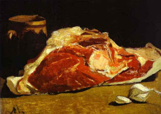

Bava Batra 60 - Source for Laws of Privacy

Even if one is allowed by others to open a window or a door in a courtyard, he should not open a window opposite another's window, nor a door opposite another's door. Why?
"... and Bilam raised his eye and saw Israel dwelling tribe by tribe...and he said...how goodly are your tents ...!" Bilam saw that the openings of their tents were not aligned one opposite the other, and his words demonstrate how highly Torah values privacy.
When the Temple was destroyed, many Jews became ascetics and resolved not to eat meat and not to drink wine. Rabbi Yehoshua asked them why. They said, because the Temple does not have it anymore. He said, then you should not eat bread, fruit, or drink water, because these too were parts of the Temple service. Rather, in a house leave a small part unpainted, and in a feast skip a dish.